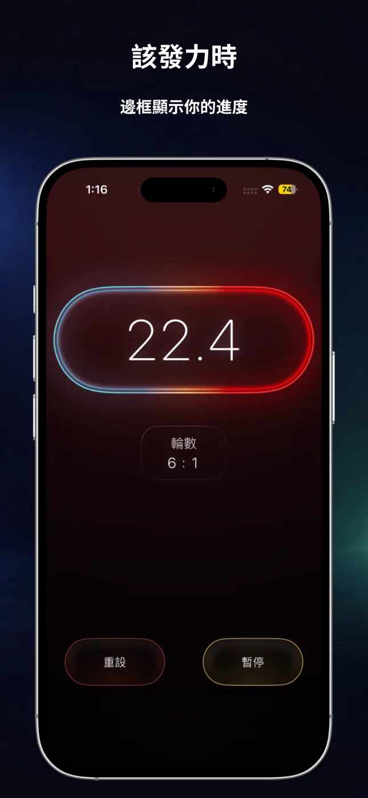
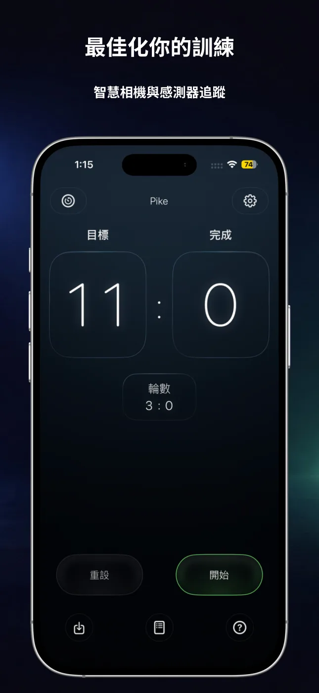
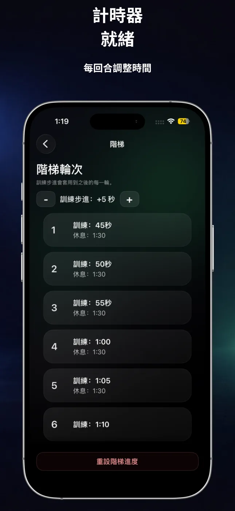
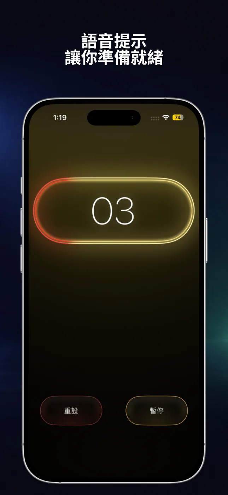
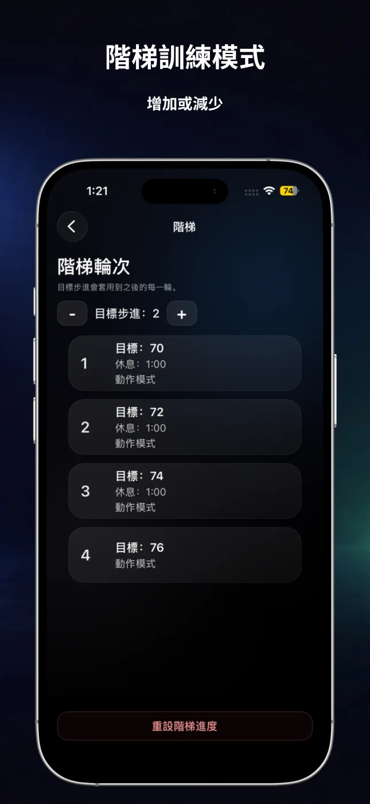
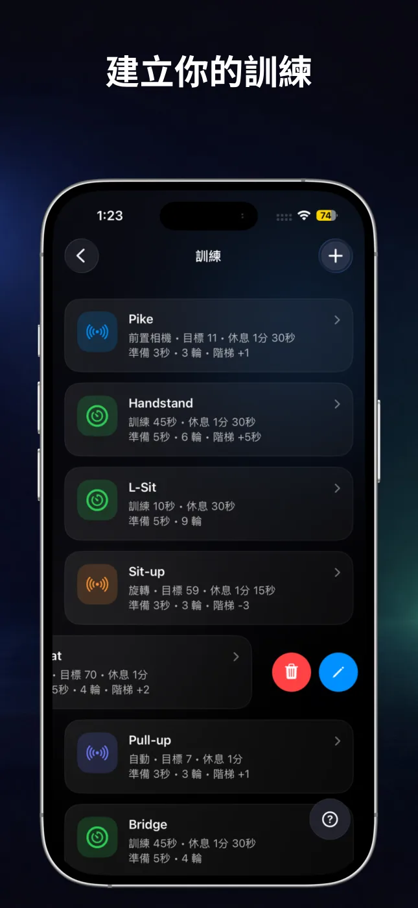

自動記錄次數
選擇動作、旋轉、自動偵測或前置相機，在訓練時記錄支援動作的完成次數。
RepChime 將精準的間歇計時器與自動次數計數結合在一起。設定訓練、開始動作，讓 iPhone 幫你掌握節奏。

無論依時間或目標次數訓練，RepChime 都能清楚呈現訓練結構，並維持簡單操作。
選擇動作、旋轉、自動偵測或前置相機，在訓練時記錄支援動作的完成次數。
分別設定訓練、休息、準備與回合，適合短時間循環、長時間保持和重複間歇訓練。
逐回合增加或減少時間與目標次數，輕鬆建立有結構的漸進訓練。
透過倒數聲音、回合提示和 RepChime Pro 選用語音引導，少看螢幕，專注動作。
儲存計時器與計數器設定，編輯常用訓練，只需輕點幾下即可開始。
返回 App 時，RepChime Pro 會根據經過的時間重新計算計時階段。預定的 iOS 通知可以提醒階段變化；App 不會在背景持續執行。
大字體、清楚階段和深色介面，讓你在組間休息或遠離手機時也能輕鬆看清。





兩種模式都遵循相同的清楚流程：設定訓練、點按開始，然後跟隨畫面與聲音節奏。
為訓練、休息和準備分別設定時間，建立 HIIT、活動度或靜態保持訓練。還可加入回合、聲音倒數與時間階梯。
設定目標並選擇動作、旋轉、自動或前置相機偵測。RepChime 支援伏地挺身、仰臥起坐、引體向上和深蹲。
RepChime 是一款 iPhone 健身工具，提供可設定的 HIIT 計時器，以及能透過裝置感測器或前置相機記錄支援動作的目標計數器。
支援伏地挺身、仰臥起坐、引體向上和深蹲。可用的偵測方式因動作而異，前置相機可用於伏地挺身。
可以。你可以儲存計時器與計數器預設。RepChime Pro 提供更多預設容量和完整編輯功能。
不需要。訓練預設和設定會儲存在裝置上。App Store 購買由 Apple 處理。